返回列表-BACK TO INDEX
ひめたん-0o0-その687
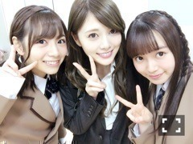
前回のNOGIBINGO!7は
妄想リクエストでした！
同級生ひめたんからの
後輩きいちゃんからの
先生まいやん。
いかがでしたか？
きゅんきゅんしてもらえたかな？
こんな学生生活ないよね！妄想素敵！
私はというと
収録もそうなんだけれども
なかなか学校で制服着る機会もないので
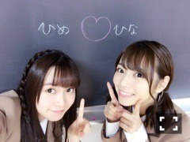
学生気分できゃっきゃしてました。笑
うおおぉ～～～
やってることが若い～～～
というか中元のリアル学生時代
こんなことするキャラじゃなかったから
柄に合わない～
ずっと机に突っ伏して寝てた～
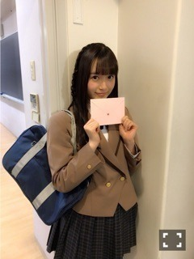
お手紙♡♡
日曜の夜は、らじらー！サンデー
次回のゲストは声優アーツに山崎エリイさん
乃木坂から高山一実ちゃんです。
募集中のメールテーマはこちら
◯かずみんへの応援メッセージ
◯RAPで教えてNOGIZAKA CHAN
◯濃い～かもしれない
◯生写真争奪！ひめたんクイズ
◯か～ずみん！なぁ～に？あのさ...
◯恋かもしれない対決
これは、あれですね、
高山一実1st写真集「恋かもしれない」
持って来ちゃうやーつーですかね。
メールの宛先はこちら
http://www.nhk.or.jp/radirer/
今日は
ベストアーティスト2016に
出演させて頂きました！
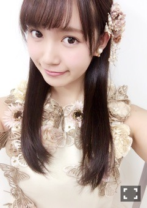
蝶々～～
新しい衣装！
見てくださったた方、
ありがとうございました( ˇωˇ )
～お知らせ～
雑誌
12/6 Top Yell 1月号
12/15 月刊ザテレビジョンお正月号
ラジオ
12/4 乃木坂46の「の」
ライブ
12/6 乃木坂46 Merry Xmas Show 2016
12/8 乃木坂46 Merry Xmas Show 2016
TV
12/7 2016FNS歌謡祭
12/14 2016FNS歌謡祭
12/16 堂本兄弟もうすぐクリスマスSP
12/31 第67回NHK紅白歌合戦
4日はらじらーの前に乃木ののに出ます！
文化放送にて夜6時からです
ラジオデー！
堀、若月、中元です
ツッコミが揃うとこうなるんだなって。
どこが使われてるかな。笑
(＊´・ω・＊)
2016/11/29 23:36｜
ひめたん-0o0-その686
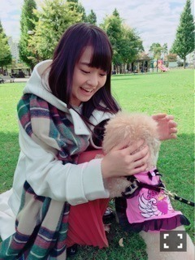
万理華ちゃん
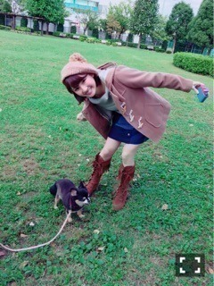
小百合ちゃん
そして
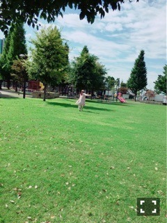
日芽香ちゃん。笑
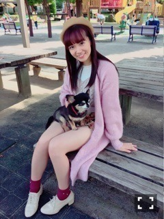
ちゃんと座ってくれました
可愛い～♡
「乃木坂46×週刊プレイボーイ2016」
よろしくお願いします！
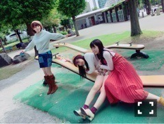
撮影楽しかった～(^o^)＊
このオフショットお気に入りです
いっつも私たちこんな感じ。笑
23日の全国握手会
ありがとうございました！
ミニライブ、握手と長い一日でしたが
皆さんと一緒に過ごせて
楽しかったです(^o^)
前回の関東全握では
体調が万全でない状態だったので
心配かけてしまいましたが
今回はたくさんお話しした気がするよ～
握手のペアは琴子でした！
まった～り握手しました(^o^)
私たち何だか波長が合うみたいです！
～お知らせ～
雑誌
12/6 Top Yell 1月号
ライブ
12/6 乃木坂46 Merry Xmas Show 2016
12/8 乃木坂46 Merry Xmas Show 2016
TV
11/26 日テレ HALLOWEEN LIVE 2016
11/29 ベストアーティスト2016
12/7 2016FNS歌謡祭
12/14 2016FNS歌謡祭
12/16 堂本兄弟もうすぐクリスマスSP
12/31 第67回NHK紅白歌合戦
紅白歌合戦、2年連続出場させて頂きます。
皆さんの応援のおかげで
今年も夢の舞台に立つことができます。
発表までドキドキだったよね、
私たちメンバーも同じ気持ちでした
本当にありがとうございます。
この一年間の集大成だったり、
感謝の気持ちだったりを込めて
精一杯パフォーマンスします！
欅ちゃん、初出場おめでとうございます！
同じ46グループとして力を合わせて
大晦日一緒に盛り上げましょう(^o^)
RADIO FISHさん！！
いつもNHKのラジオブースで
ご一緒させて頂いている身として、
NHKホールで共演できるというのは
グッとくるものがあります......
裏トークチャンネルはバナナマンさん。
去年は歌う前にバナナマンさんの顔を見て
安心できたねってメンバーみんな言ってて
流石、公式お兄ちゃんですね。頼もしい。
こうして素敵なファミリーの皆さんと
一緒に出場できるということで
喜びもひとしお。
2016年、最後までよろしくお願いします！
(＊´・ω・＊)
2016/11/25 23:48｜
ひめたん-0o0-その685
明日の全国握手会は
第16レーンにて
琴子と一緒にお待ちしてます＼(^o^)／
その前のミニライブでは
初披露の曲がたくさんありますね！
一日楽しんでいきましょーう！
よろしくお願いします！
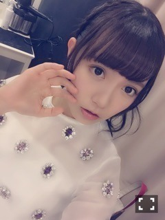
「孤独な青空」は
ガシガシ踊りますo(^o^)o
日曜の夜は、らじらー！サンデー
ゲストは声優アーツに水瀬いのりさん、
乃木坂から若月佑美ちゃんでした！
絨毯！
過去一笑った気がする私は。
若の言葉は結構ツボです。
オンエア終わってから全力で平謝りしてて
それもまた彼女らしいなと思いつつ
次来てくれた時もまたきっと
熱いバトルが繰り広げられるんだろうな～
次回の乃木坂回は12/4、
高山一実ちゃんをお迎えします。
私、かずみんの時も
ゲラッゲラ笑った記憶があります
この1ヶ月で腹筋鍛えられそうです(願望)
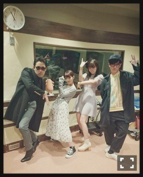
最後に撮る写真のこれ、
恒例化しつつあります(・∀・)
乃木坂カメラで撮ったのは初かも。
次回もお楽しみに！
～お知らせ～
雑誌
11/24 乃木坂46×週刊プレイボーイ2016
12/6 Top Yell 1月号
ライブ
12/6 乃木坂46 Merry Xmas Show 2016
12/8 乃木坂46 Merry Xmas Show 2016
TV
11/26 日テレ HALLOWEEN LIVE 2016
11/29 ベストアーティスト2016
12/7 2016FNS歌謡祭
12/14 2016FNS歌謡祭
12/16 堂本兄弟もうすぐクリスマスSP
年末特番！ありがたやですね( ˇωˇ )
週プレ乃木坂号では
さゆまりひめでのグラビアページ
アンダーセンター座談会ページ
載ってると思います～
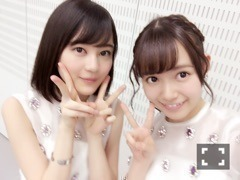
ではまた明日～
(＊´・ω・＊)
2016/11/22 23:42｜
ひめたん-0o0-その684
「個別指導Axis」さんの
広告モデルとして
去年に引き続き撮影に参加しました！
知る人ぞ知る、という
エピソードにはなってしまいますが
私が乃木坂に入る前からお世話になってて
今年も広島で撮影したのですが
中元さんお姉さんになったね～みたいな
まるで親戚の様な空気感でした。
去年は塾構内でほとんど撮ったのですが
今年は終始外ロケでした～
ハタチだけどまだまだ制服頑張るぞ！！
おうちの近くにAxisあるよって方は
是非チェックしてみて下さい( ˇωˇ )
また一緒にお仕事出来て嬉しかったし
もっともっと活躍している姿を
見てもらいたいなと思った一日でした。
ありがとうございました！
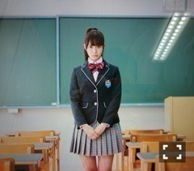
私、童顔なんかな？
「ベストヒット歌謡祭2016」
「Rの法則」
ありがとうございました＼(^o^)／
ベストヒット歌謡祭は
乃木坂ちゃんとしては今年で3回目なのかな
本当にありがたいことですね。
私個人としては初めてだったので
出演できたこと光栄でした。
初めてって、発見とか、刺激が多いよね！
そして年末って感じがしてきたぞ！！
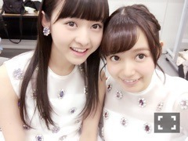
そしてRの法則では軽音部として
乃木團呼んで頂きました！！
乃木團～～
乃木團好き～～
個人的には夏のリベンジと思ってましたが
そういえば「失恋したら、顔を洗え！」
テレビ初披露でもあったんですね。
神宮で聴けなかった～という方にも
少しお届けできたのではないかなと。
あとバンドのみんなの「Purple Rain」！
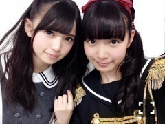
写真はちょっと前だごめんね( ´ ･ω･ ` )
そういえば現メンバーでの集合写真
撮ったことない気がする。
今度演奏する機会があれば撮ろう！！
日曜の夜は、らじらー！サンデー
明日の放送は声優アーツに水瀬いのりさん
乃木坂から若月佑美ちゃんをお迎えします～
前回は名古屋からの中継だったので
1ヶ月振りのスタジオ
なんだか久々な気がする！
メールまだまだお待ちしてます＼(^o^)／
メールテーマの他に
ふつおた、リクエストソングも是非。
おたよりはこちらから～
http://www.nhk.or.jp/radirer/
～お知らせ～
雑誌
11/24 乃木坂46×週刊プレイボーイ2016
12/6 Top Yell
ライブ
12/6 乃木坂46 Merry Xmas Show 2016
12/8 乃木坂46 Merry Xmas Show 2016
TV
11/26 日テレ HALLOWEEN LIVE 2016
12/7 2016FNS歌謡祭
12/14 2016FNS歌謡祭
12/16 堂本兄弟もうすぐクリスマスSP
寒くなってきました、
夏に比べてよく眠れる様になったのは
よいことなんだけれど
なかなかお布団から出られません。
みんなそうだよね！がんばろう！
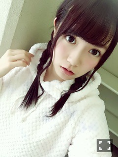
もこもこ。おやすみ～
(＊´・ω・＊)
2016/11/19 23:36｜
ひめたん-0o0-その683
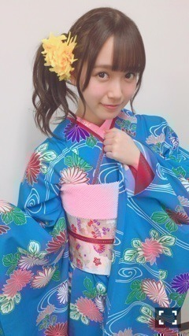
昨日はうたコンでした！
観てくれたかな？
出演者の皆様、
和服を着ていらっしゃって
ステージも紅葉が綺麗な秋景色。
しっとりとした45分間でした
「サヨナラの意味」も披露しました～
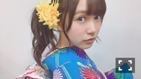
ちらっ
2枚とも飛鳥ちゃんが撮ってくれたよ(^o^)
和服って普段なかなか着ないよね
あーもうすぐ成人式だわーー
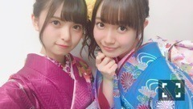
続けて「サラメシ」にも出演しました
ありがとうございました～＊
月曜日のNOGIBINGO!7は
乃木坂ドールと遊んじゃおう企画でした
余談ですが、この日は
やっとメンバーいっぱい揃った
収録になりました～
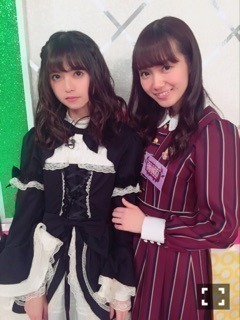
アスカ～～～～～
一緒に遊びましたo(^o^)o
精一杯愛でてみました、
縄跳びも頑張ってくれました。
お人形遊び好きだったな～懐かしい～
日曜の夜は、らじらー！サンデー
ゲストは声優アーツに水瀬いのりさん
乃木坂から若月佑美ちゃんです！
募集中のメールテーマはこちら
◯若への応援メッセージ
◯孤独な青空の下の独り言
◯RAPで教えてNOGIZAKA CHAN
◯ひ～めか！なぁ～に？あのさ...
◯ひめたんの妄想デート
◯メイド&執事対決
宛先はこちら
http://www.nhk.or.jp/radirer/
若～久々＼(^o^)／
～お知らせ～
雑誌
11/24
乃木坂46×週刊プレイボーイ2016
ライブ
12/6
乃木坂46 Merry Xmas Show 2016
12/8
乃木坂46 Merry Xmas Show 2016
TV
11/17
ベストヒット歌謡祭2016
11/17
Rの法則
11/26
日テレ HALLOWEEN LIVE 2016
12/16
堂本兄弟もうすぐクリスマスSP
私、最近の傾向として
選抜発表とか、何か大きなことがない時は
本音とかあまりブログには
書きたがらないみたいなんだけど
ちょっとだけ今思ってること綴ると
言葉にすることって
凄く大事なんだなって
最近強く感じた出来事があって。
ロングインタビューして頂く機会があって
正直最近モヤモヤしてて
でも何に対してなのかもわからなくて
こんな状態で私はちゃんと記事になること
話せるんだろうかみたいな状態で
臨んだわけなんだけれども、
その時間の中で
単語とか、短いワードとか、
そんなのものを繋げていくうちにというか
散らかってたものをそのまま
全部ぶつけてみたらというのかなぁ
そしたら、まあ言ってしまえば
ライターさんが導いてくれた道なんだけど
自分の中で見えてくるものがあって
私は今こんなことに悩んでいるんだとか
あのことに合点がいかなかったから
この前泣いてたんだとか
漠然と抱えていたものがひとつひとつ
整理されていくのを感じて。
インタビューが終わるころには
シャワー浴びて来ましたみたいな
さっぱりとした気分になりました。
モヤモヤがなくなったとは
言ってないけれども、
そうではなくて、
自分ひとりでは
何を考えているかもわからなかったものが
話してみることによってクリアになっていく
そういう体験をしました。新鮮でした。
っていうこの長い長い話とは
全く関係ないことを最後に言うけど
ラジオとかテレビで
あまり言う機会がないから
ここで言います！
「孤独な青空」めっちゃ好き！！！
(＊´・ω・＊)
2016/11/17 00:18｜
返回列表-BACK TO INDEX